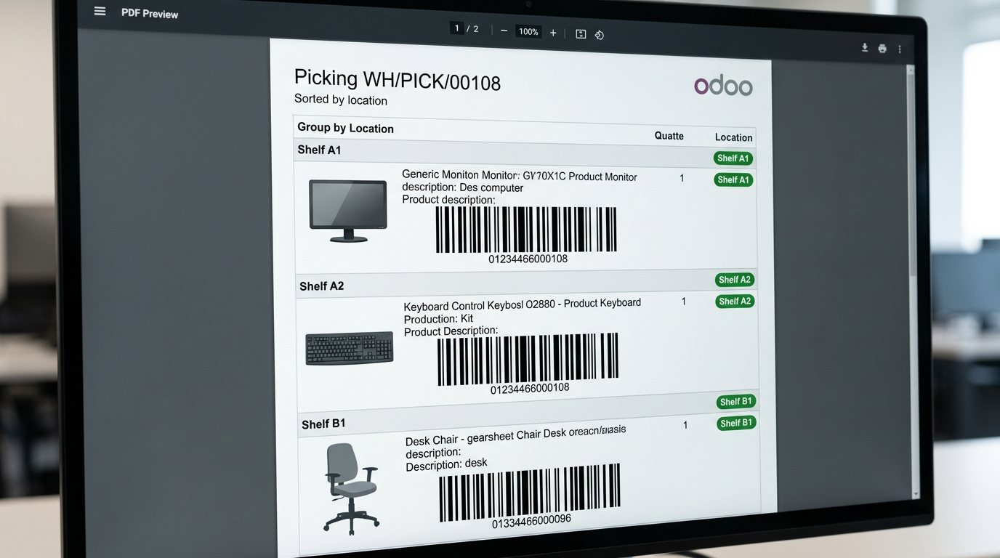

Smarter picking routes, product images on slips, and enlarged barcodes — so your warehouse operators walk less, pick faster, and scan reliably every time.
Warehouse picking errors cost money. This module attacks the root causes directly.

Three automatic improvements activate the moment you print a picking slip.
When you validate or print a picking operation, the module reads the source location of each move line (e.g., WH/Stock/Shelf A, WH/Stock/Shelf B) and reorders the printed lines from closest to farthest. Your operator starts at aisle A, finishes at aisle Z — no backtracking.
Each line on the printed picking slip now shows a product thumbnail image directly next to the product name. Operators confirm visually before picking — no more confusing similar-looking SKUs. Images are pulled directly from the Odoo product record, so no extra configuration is needed.
The native Odoo picking report prints barcodes at a very small size, often causing scanner failures and repeated scans. This module enlarges the barcode on the printed document to a size that modern handheld scanners can read reliably, even under poor warehouse lighting conditions.
Everything is automatic. Install the module, activate the settings, and print your next picking slip.
Lines are reordered by source location name automatically. Works with any warehouse structure — aisles, bins, zones, multi-level shelving.
Images are pulled from the Odoo product record. No extra uploads needed. If a product has no image, the line prints normally with no errors.
Barcode size is increased to the optimal scanning size. Compatible with all standard handheld barcode scanners and mobile scanning apps.
Each of the three features (sorting, images, barcode size) can be toggled on or off independently in Inventory → Configuration → Settings.
Full interface translation in English and Spanish. All settings labels, PDF headers, and column titles switch based on the active Odoo user language.
Implemented as a pure QWeb report override. Does not touch any Odoo core file. Safe to install alongside any other module. OCA-compliant architecture.
Tested on Community and Enterprise across all modern Odoo versions.
Depends on: stock | Works with: Community & Enterprise | License: OPL-1 | Price: €49.99
Visual Picking Routing pays for itself the first week. Fewer picking errors, less walking, faster throughput — install it today.
🏭 Install from Odoo AppsOPL-1 • Odoo 15-18 • English & Spanish • Community & Enterprise